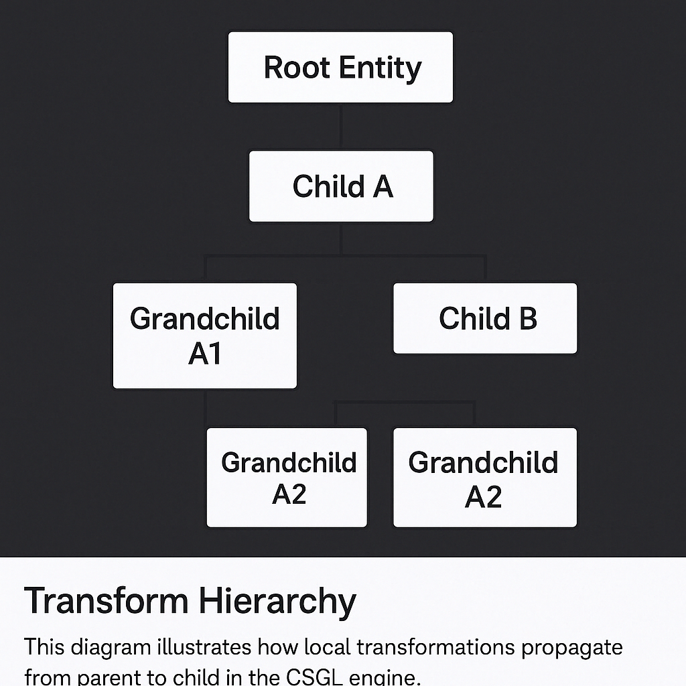

Rendering of various shapes and geometry in 3D.
Overview
This project explores low-level graphics programming using OpenGL and the OpenTK wrapper for C#. It features a custom render loop, shader pipeline, and basic buffer management.
Core Concepts
- Shader pipeline (Vertex/Fragment GLSL shaders)
- Manual VAO/VBO/EBO management in OpenTK
- Custom camera with view/projection matrices
- Texture sampling and fragment coloring
Technologies
- C#, OpenGL
- Custom vertex buffers
Development Media
Mesh
The mesh class is the core wrapper that handles all draw logic and buffer coordination for a 3D mesh. It constructs and links VAO, VBO, and EBO instances, handles shader activation, and binds textures before issuing draw calls. It also manages uniforms for transformation matrices, lighting, and camera data. This class is responsible for abstracting the OpenGL pipeline into a clean object-oriented interface for rendering dynamic or static geometry.
Loading...
VAO.cs (Vertex Array Object)
The VAO (Vertex Array Object)manages the Vertex Array Object, which stores references to vertex buffer layouts. It defines the structure of vertex attributes (position, normal, tangent, and UV) and links them to specific shader layout locations. This class encapsulates the logic required to configure and reuse attribute bindings across multiple meshes or shaders.
Loading...
VBO.cs (Vertex Buffer Object)
The VBO (Vertex Buffer Object) is responsible for generating and uploading vertex data to the GPU. It stores vertex attributes in a contiguous float array and transfers them to the GPU using OpenGL’s BufferData call. It supports customizable usage hints (e.g., StaticDraw) to optimize performance based on how often the data changes.
Loading...
EBO.cs (Element Buffer Object)
The EBO (Element Buffer Object) manages index data used for drawing mesh elements with glDrawElements. It ensures only unique vertices are stored in the buffer and re-used efficiently using index referencing. This helps reduce memory overhead and improves draw call efficiency when rendering complex meshes.
Loading...
default.vert (Vertex Shader)
The vertex shader transforms incoming vertex positions using a combined model-view-projection matrix. It also passes interpolated normals, UVs, and tangents to the fragment shader. This stage lays the groundwork for lighting and texturing by preparing surface data in world or view space.
Loading...
default.frag (Fragment Shader)
The fragment shader performs per-pixel lighting using a basic Lambertian diffuse model. It combines sampled texture color and surface normal direction to calculate the final fragment color. The shader supports UV-based texture mapping and light direction control via uniforms.
Loading...
Component.cs
Component.cs defines the base class for all engine-side components in CSGL. It includes virtual Start(), Update(), and Instance() methods to support behavior injection and runtime configuration via JSON. Components are attached to entities and registered by type for dynamic construction, enabling flexible ECS-like architecture without overcomplication.
Loading...
Transform Hierarchy
This diagram illustrates how each Transform holds local position, rotation, and scale, while also referencing a parent, creating a hierarchical structure.
Transform Matrix: TRS Composition
In CSGL, every object’s transformation is composed using a TRS matrix: Translation, Rotation, and Scale. These are combined into a single model matrix used in the vertex shader for world positioning.
The multiplication order is:
ModelMatrix = Translation × Rotation × ScaleThis order matters — because matrix multiplication is not commutative. Applying scale before rotation ensures the object scales in its own local space. Translation is applied last, so the final position of the object is based on its rotated and scaled result.
When applied to a vertex:
v' = ModelMatrix × v = T × (R × (S × v))In a hierarchy, transformations propagate from parent to child. Each child’s world matrix is calculated like this:
WorldMatrix = ParentWorldMatrix × (T × R × S)This allows complex nested structures, like articulated limbs or cameras attached to moving objects, to inherit transformations from their parents while retaining local adjustments.
Transform.cs
Transform.cs handles hierarchical object transformations including local and world position, rotation, and scale. It supports parent-child relationships, automatic matrix updates, and vector utilities such as forward and right direction calculation. This class is foundational for spatial management in CSGL and integrates with the rendering pipeline via TRS matrices. It also provides methods for relative rotation (e.g., RotateAround()) and deferred transformation propagation.
Loading...